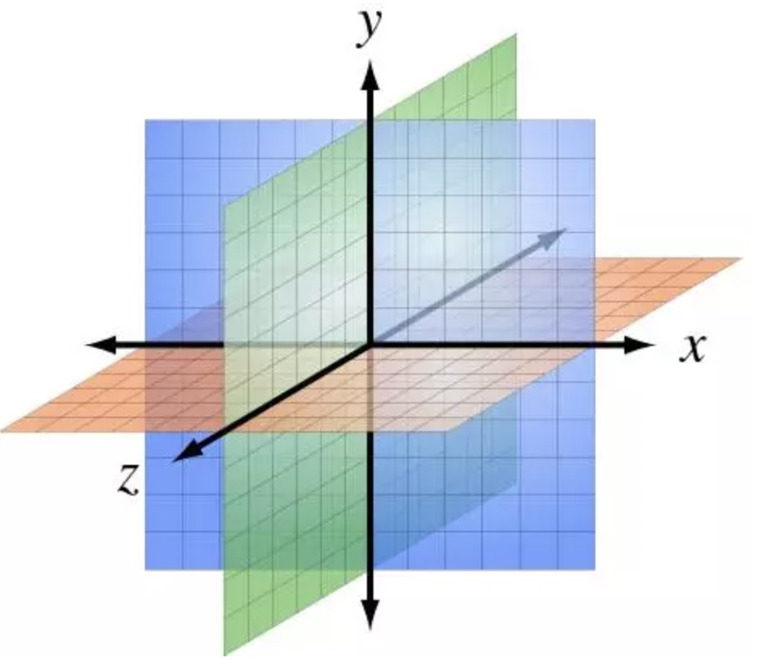

在机器学习领域，“维度(Dimensionality)”通常指数据集中的特征数量（即输入变量的个数）。
当特征的个数特别大的时候（相对于数据集中观测样本的数量来说），训练出一个有效的模型，对算法要求就会特别高(即，用现有的算法训练出一个有效的模型特别困难)。这就是所谓的“维度灾难(Curse of Dimensionality)”，特别是对依赖于距离计算的聚类算法而言。

对于“维度灾难”，有位 Quora 用户给出了一个非常好的类比：
假设有一条100码的直线，而你在该直线的某处掉了一枚硬币。要找回硬币并不难，你只需沿着这条线走就行了，最多花上你2分钟时间。
然后，假设有一个长和宽都是100码的广场，而你是把硬币掉在广场的某个位置。现在再想找回它，可就不容易了，这好比在两个并排的足球场中找针，可能会耗上你几天时间。
再然后，假设是一个长、宽、高都是100码的立方体，那就好比是在30层楼高的大型体育场内找zhen找针……
随着维度的增加，在空间中搜索的难度也会变得愈加困难。
Quora链接：
https://www.quora.com/What-is-the-curse-of-dimensionality/answer/Kevin-Lacker
这就需要数据降维的办法：
- 特征选取和特征提取。
“机器学习中的数据维数与现实世界的空间维度本同末离。在机器学习中，数据通常需要被表示成向量形式以输入模型进行训练。但众所周知，对向维向量进行处理和分析时，会极大地消耗系统资源，甚至产生维度灾难。因此，进行降维，即用一个低维度的向量表示原始高维度的特征就显得尤为重要。常见的降维方法有主成分分析、线性判别分析、等距映射、局部线性嵌入、拉普拉斯特征映射、局部保留投影等。”